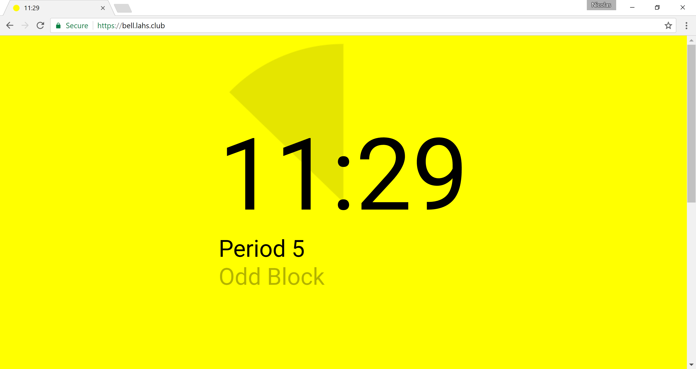
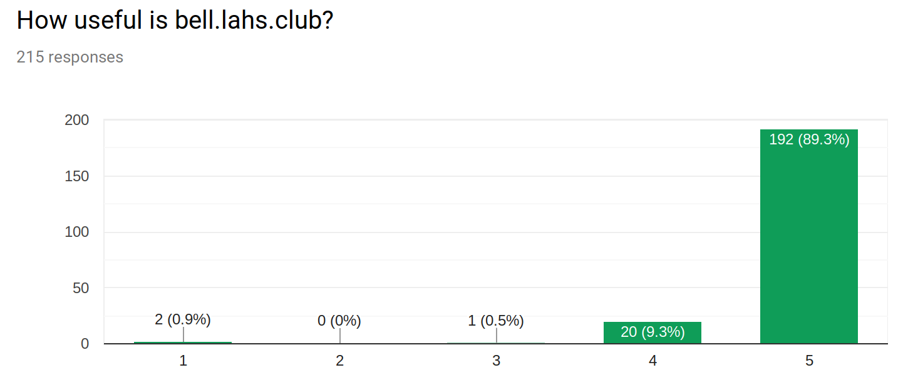
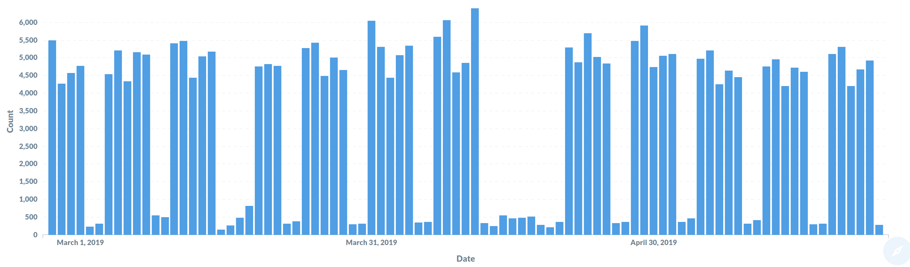

You’d think a countdown timer to the end of class would be an easy one-day project. I thought so too, but it ended up dominating my free time during my senior year of high school.
It began as many good projects do – I was feeling a bit lazy. My high school’s schedule changed frequently depending on the day of the week, and I rarely knew exactly when the bell was supposed to ring. Rather than wait for the oh-so-slow school website to load to look up the schedule, I decided to make a website to do the work for me. Having recently implemented a policy of providing Chromebooks to all students, my high school was the perfect place for a project like this to take off, although I didn’t realize it at the time.

What’s so hard about this?
It’s just a timer, right?
Dealing with Special Schedules
Well, a timer needs to know when the end time is, and this was simple enough to hard-code. But as time went on and I started encountering special schedules, I decided to go a bit overboard and write a parser for my own format for specifying school schedules and calendars. Later on, this would pay off when I wanted to quickly add support for additional schools. It also features a way to enter custom schedules if your school isn’t supported.
Precise Timing
I suppose I was also a bit of a perfectionist, wanting it to tick over to
the next period exactly when the bell rings. On devices where the system
time might be slightly incorrect, this required time synchronization with
the server. This revealed to me that even the school’s time was wrong and
would even vary depending on the day. I hacked together a Telegram bot I could
send messages to like bell add 1000 to push the website 1000 ms forward
to match the school.
Feature Creep
Inevitably, people want more features. I added support for custom themes in a way that would make it easy to implement new ones while still being extensible enough to support things such as a special snow effect during winter break.
Acknowledgements
Jonathan Shi contributed by creating the Chrome extension as part of his senior project in high school.
After I went off to college, Jamsheed Mistri helped to keep the schedules updated and we worked together on creating some stickers to promote the website.
Analytics
What I thought would be a useful tool for myself quickly became popular at the school, and was even requested at other schools. Feedback from from a survey I sent out was overwhelmingly positive (1 = Not useful at all, 5 = Extremely useful):

After starting college and no longer being on the ground seeing it being used in high school, I wanted to keep an eye on the usage. I created my own analytics stack to avoid dependence on any external services. I put my newly learned SQL programming skills to use when setting up the stats page using Metabase.

The public stats page includes many more charts of the data collected, including usage by school and over the course of a day.
Conclusions
Creating bell.plus has been one of the greatest learning experiences for me, because I was ultimately responsible for setting it up and making sure everything continued working well. From programming the front and backends, maintaining uptime with Docker swarm, and performing analysis on the usage information, it has required me to attain at least a working familiarity with all parts of the software deployment process. If you’re interested in the specific technologies I’ve used, bell.plus is open source and available on GitHub. Its usefulness to other students at my former high school continues to humble me and encourage me to keep it going strong for the years to come.